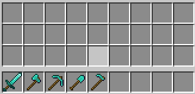

Tools
- Sword: Sword is the main minecraft weapon for fighting, it deals more damage compared to most other damage. It can be crafted from wood, stone, copper, iron, gold, diamond, and upgraded from diamond to netherite.
- Axe: Axe is considered a tool for chopping and fighting, on Java edition, it has a longer attack cool down then a sword. It can be crafted from wood, stone, copper, iron, gold, diamond, and upgraded from diamond to netherite.
- Pickaxe: Pickaxe is a tool used for mining hard blocks like stone and ores. It can be crafted from wood, stone, copper, iron, gold, diamond, and upgraded from diamond to netherite.
- Shovel: Shovel is used to mine blocks like snow, sand, dirt etc. All of these can be mine and collected by hand but it is a lot easier and faster with a shovel. It can be crafted from wood, stone, copper, iron, gold, diamond, and upgraded from diamond to netherite.
- Hoe: A hoe is used to convert dirt into farmland so you can grow crops. It can be crafted from wood, stone, copper, iron, gold, diamond, and upgraded from diamond to netherite.

CC0 - Created by Evan Slobodsky
Home Page
Biomes Page
Ores Page
Mobs Page
Tools Page